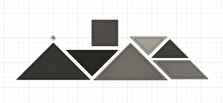

Puzzle plate 🧩
〜スマートなお皿でスマートに〜
コロナのせいで、バイトもほとんどないからずーっと家にいっぱなしで、
授業はオンラインでやる気も起きん…
洗濯に掃除に料理もしないといけないし、めんどくせえ！！！！やりたくねえ！！！
でもやらないと食べ物残りカスは腐るし…
頭も使わんから脳ミソも腐る…
そこで…！！！！


え、何ちょっとおしゃれじゃん、
可愛い、、、皿の組み合わせ方で絵に見える…？！
どゆことどゆこと？？？
「金子、ちょっとオシャレな脳トレになるお皿を作る…？！」
………………ってことでやってまいりました！！
テレビショッピングのお時間です…！！！！
今回ご紹介する商品は…こちら！！！！！！
皆さんは、料理するのが面倒でコンビニ弁当・・・
洗い物をするのが嫌で溜めてしまうことはないですか？
そこで、今回は食事から片付けまでが楽しくなるモノを作りました！
商品名「Puzzle plate」

由来は、単純に「"パズル"のような"プレート"」だからです・・・笑

機能
・どんな料理にも合うシンプルなデザイン
・専用のケースに収納すればワンプレートとしても使える
→収納するには脳トレパズルのようにお皿を組み合わせなければならない


食事中はおしゃれなお皿として、様々な料理を引き立てる！

食後はただ洗うだけでなく、脳トレしながら片付け！！